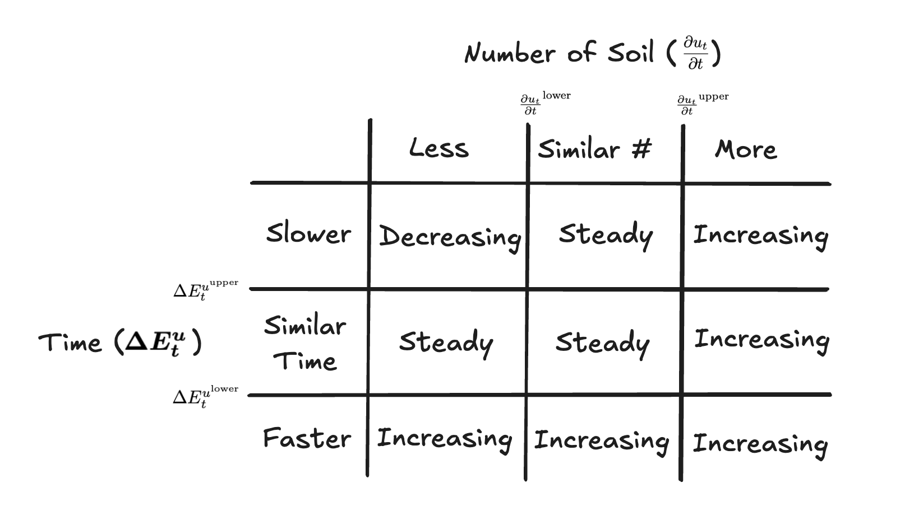

PI-8: Misc. Efficiency Improvements
Executed on April 17, 2025 at 19:23 UTC.
Summary
- Maximum Crop Ratio Increase: Increase the Maximum Crop Ratio from 150% to 200%.
- Extremely High Pod Rate Level: Introduce a new Extremely High Pod Rate level, set the threshold above which the Pod Rate is considered Extremely High to 100%, and set the Maximum Temperature adjustments for the Extremely High Pod Rate cases.
- Demand for Soil Measurement Update: Update the mechanism for measuring demand for Soil when Soil is sold out over the previous two Seasons.
- Demand for Soil Measurement Threshold: Add a minimum threshold of 25 Pinto for how much Soil must be Sown in order to measure demand for Soil.
- On-Chain Deposit Sorting: Add helper functions for sorting Deposits on-chain.
- Tractor Helper Functions: Add Tractor execution helpers, caller-context views and operator controls to support more expressive Blueprints.
- Interface and Event Updates: Update parameter-setting compatibility and conversion-penalty event data for integrations.
Links
- Implementation Commit: fe38496fb4700f42f11ed4a2e9000ca57aa7feb4
Problems
1. Maximum Crop Ratio Increase
The recent increase of the Maximum Crop Ratio from 100% to 150% did not sufficiently change the ability for the protocol to incentivize Depositors to Convert LP to Pinto.
2. Extremely High Pod Rate Level
The protocol did not have a way to distinguish how it changes the Maximum Temperature when the protocol has a Pod Rate that is high but not so high that it is a potential threat to the long term health of the protocol, and when it is.
3. Demand for Soil Measurement Update
With the introduction of the Cultivation System, the protocol regularly was in the circumstance where the number of Soil issued from Season to Season was very different, such that the existing method to measure changes in demand for Soil in instances where the Soil sold out last Season no longer worked.
4. Demand for Soil Measurement Threshold
Demand for Soil was highly manipulable with very little capital due to the lack of a minimum number of Pinto that must be Sown in order to measure demand.
5. On-Chain Deposit Sorting
The inability to sort a user's Deposits on-chain led to inefficient execution when Withdrawing a user's Deposits with the lowest Mown Stalk per PDV for Tractor operations.
6. Tractor Helper Functions
Expressive Blueprints were difficult to implement given the existing set of view functions and events for Tractor metadata.
7. Interface and Event Updates
The parameter-setting interface used an older tuple signature that omitted the existing rain-related Crop Scalar setting. Conversion-penalty events reported only the Stalk lost, without identifying the account or the Grown Stalk retained.
Solutions
1. Maximum Crop Ratio Increase
Update s.sys.evaluationParameters.maxBeanMaxLpGpPerBdvRatio from 150e18 to 200e18.
2. Extremely High Pod Rate Level
Create a new Extremely High Pod Rate threshold and set it to 100%. Apply the new Extremely High Pod Rate Maximum Temperature adjustments only when the Pod Rate exceeds 100% and TWAΔP < 0.

3. Demand for Soil Measurement Update
Update the method to measure changing demand for Soil as follows.
After the 25-Pinto minimum is met, a sellout in less than 20 minutes, more than 5 minutes faster than the prior sellout, or following a Season without a sellout means increasing demand. Otherwise, sellouts within 5 minutes of the prior sellout mean increasing demand if at least 5% more Soil was Sown, and steady demand otherwise. A sellout more than 5 minutes slower uses the change in number of Soil Sown. Seasons without a sellout also use that comparison of the number of Soil Sown.
The diagram below assumes consecutive sellouts, at least 25 Pinto Sown, and a sellout time of at least 20 minutes. Its time boundaries are 5 minutes faster or slower, and its quantity boundaries are 95% and 105% of the prior Season’s Soil Sown.


If Soil did not sell out last Season but sold out the Season prior, the protocol compares the number of Soil sold across the two previous Seasons.
4. Demand for Soil Measurement Threshold
Set the minimum number of Pinto that must be Sown in a Season in order for demand for Soil to be measured – and thus not considered decreasing – to 25.
5. On-Chain Deposit Sorting
Add a function that allows anyone to validate and store a Farmer's supplied Deposit ordering for one token (depositIdList) in ascending Stem order (descending Mown Stalk per PDV) (i.e., the Deposit with the lowest Mown Stalk per PDV is at the last index in the list).
6. Tractor Helper Functions
Add external contracts to support the Tractor ecosystem. TractorHelpers provides getSortedDeposits (descending Stem) and getSortedWhitelistedTokensBySeeds (descending Seeds). Their deployment addresses are listed under Other Contract / Parameter Changes.
Egis reviewed the Sow Blueprint and supporting SiloHelpers, PriceManipulation, PerFunctionPausable and OperatorWhitelist contracts (final audit report here). The report identifies review commit c9eb6ff25dd0ae87d454ab4e5b719af3ca402f72 and resolution commit 378c67ea1dcfdd184a227c24a42dc81f8ff136cb. It does not include BeanstalkPrice or attest to the exact deployed bytecode listed here.
7. Interface and Event Updates
Update the parameter-setting interface to include the existing rain-related Crop Scalar setting. Expand conversion-penalty events to identify the account and report both Grown Stalk lost and Grown Stalk retained.
Rationale
1. Maximum Crop Ratio Increase
The protocol can incentivize LP -> Pinto Converts by awarding more Seeds to Pinto Deposits. The recent change of the Maximum Crop Ratio from 100% to 150% marked the first time the protocol was willing to offer more Seeds to Pinto Deposits than to any LP Deposit. However, this change was insufficient to incentivize enough LP -> Pinto Converts to consistently return the Pinto price to its value target. Increasing the Maximum Crop Ratio further to 200% may improve the ability of the protocol to return the Pinto price to its value target.
2. Extremely High Pod Rate Level
Before PI-8, the protocol had an Excessively High Pod Rate threshold, above which the protocol treated all Pod Rates the same. However, given the fact that the Excessively High Pod Rate threshold is still generally at a low and healthy Pod Rate, it is suboptimal for the protocol to treat all Pod Rates above that threshold identically. Introducing an Extremely High Pod Rate threshold solves this problem.
Setting the Extremely High Pod Rate threshold at 100% is a sufficiently high Pod Rate such that when the protocol has a higher Pod Rate, it should act more conservatively with respect to changes in the Maximum Temperature.
3. Demand for Soil Measurement Update
The examples below assume at least 25 Pinto were Sown and the sellout took at least 20 minutes. Similar sellout times are within 5 minutes of one another. A similar number of Soil means at least 95% but less than 105% of the prior Season’s number.
If Soil sold out in consecutive Seasons and sold out more than 5 minutes faster the second Season, demand for Soil should be considered increasing.
If Soil sold out in consecutive Seasons and at least 5% more Soil was sold the second Season, demand for Soil should be considered increasing.
If Soil sold out in consecutive Seasons and the time it took to sell out was similar and the number of Soil sold was similar, demand for Soil should be considered steady.
If Soil sold out in consecutive Seasons and the time it took to sell out was similar but the number of Soil sold out was less, demand for Soil should be considered steady because the number of Soil sold being less was a function of the protocol being willing to issue less Soil due to a significant change in TWA∆P, not there necessarily being less demand for Soil. Thus, time is a better proxy for changing demand for Soil than number of Soil sold.
If Soil sold out in consecutive Seasons and it took longer to sell out and there was a similar number of Soil sold, demand for Soil should be considered steady. This is because even though Soil took longer to sell out the second Season, if the same number of Soil was sold but Soil didn't sell out, demand for Soil would be considered steady. It would be incoherent for the protocol to consider demand for Soil to be decreasing if it sold out, but steady if it didn't sell out given the same amount of time and number of Soil sold.
If Soil sold out in consecutive Seasons and it took more than 5 minutes longer to sell out and more than 5% less Soil was sold, demand for Soil should be considered decreasing.
If Soil sold out two Seasons ago but did not sell out last Season, it makes sense for the protocol only to consider the number of Soil sown because it is possible that more Soil was sown but it didn't sell out because the increase in the Cultivation Factor resulted in a significant increase in the number of Soil available. By checking the number of Soil sown the protocol can accurately measure changing demand over the previous two Seasons.
4. Demand for Soil Measurement Threshold
The introduction of a minimum threshold below which demand for Soil is always decreasing raises the minimum number of Pinto required to influence the demand for Soil measurement. Previously, the measurement could be influenced essentially for the cost of gas. The new threshold requires at least 25 Pinto to be Sown before demand can be steady or increasing.
5. On-Chain Deposit Sorting
Pinto stores a list of Deposits that the farmer owns on chain. An on chain list allows Smart Contracts to access the value a given farmer owns, without using indexing services. The Deposit list does not enforce any sorting rules when adding/removing entries. By having an optional function that allows anyone to validate and store a supplied ordering in descending order in terms of Mown Stalk per PDV in a permissionless fashion (which in PI-8 updated the ordered array but not its index mapping), smart contracts can more easily find the Deposits with the lowest Mown Stalk per PDV in a gas efficient fashion.
TractorHelpers traverses the stored Deposit list backward in order to use the Deposits with the lowest Mown Stalk per PDV in the Sow Orderbook. This ordering depends on the stored list being sorted in ascending Stem order.
6. Tractor Helper Functions
Shared withdrawal-planning and caller-context helpers let Blueprints coordinate Deposits, operators and token transfers without duplicating that logic. Explicit execution metadata also makes Tractor activity easier for integrations to identify.
7. Interface and Event Updates
Including the existing rain-related setting in the parameter tuple keeps the administrative interface aligned with stored configuration. Identifying the account and retained Grown Stalk in conversion-penalty events gives indexers the context needed to interpret each penalty.
Contract Changes
Initialization
InitPI8.init() at 0xeb393ee29335d6f75cbadbddbd115553e275bb3c set minSoilSownDemand from 0 to 25e6 (25 Pinto per Season) and maxBeanMaxLpGpPerBdvRatio from 150e18 to 200e18 (150% to 200%). It rescaled the existing Crop Scalar to approximately preserve the Crop Ratio, then rounded the scalar down to whole percentage points.
Facet Changes
The executed diamond cut replaced 17 facets, added eight selectors and removed the prior updateSeedGaugeSettings selector. Replacing a facet does not mean every function in that facet changed.
Other Contract / Parameter Changes
| Supporting Contract | New Deployment |
BeanstalkPrice | 0x13D25ABCB6a19948d35654715c729c6501230b49 |
PriceManipulation | 0x774c111F471FBa61B13D63C9B585882e3c6cf7A6 |
OperatorWhitelist | 0xF4ee12763976C3025194ef0E272a8390164Cc18f |
TractorHelpers | 0x2808b14d287F8CA77eb25B16575aF187d5A05119 |
SowBlueprintv0 | 0xbb0a41927895F8ca2b4ECCc659ba158735fCF28B |
The table below lists the externally linked libraries recorded in the previous and new deployed facet metadata. Shared dependencies are deduplicated. LibSilo and LibTokenSilo each had two previous deployments, identified by their consuming facets. The other replaced facets had no externally linked library dependencies. Address changes do not imply that every library function changed. The final row records the additional library linked by the supporting TractorHelpers deployment.
Function Changes
- Updated
Weather.updateTemperatureAndBeanToMaxLpGpPerBdvRatio()to apply Maximum Temperature changes of +0.5, 0 and −1 percentage points for decreasing, steady and increasing demand, respectively, only when the Pod Rate is strictly above 100% and TWA delta is negative. The existing rule resets Temperature to 1% if a decrease meets or exceeds the current Temperature.
- Updated
LibEvaluate.calcDeltaPodDemand()and added internalgetDemand(). After the minimum is met, fast sellouts indicate increasing demand. Similar-time sellouts retain a steady-demand floor. Slower sellouts and Seasons without a sellout use the ratio of Pinto Sown to the previous Season: below 95% is decreasing, from 95% to below 105% is steady, and at least 105% is increasing. A zero prior number with a positive current number indicates increasing demand.
- Added the
minSoilSownDemandcheck before the other demand rules. Fewer than 25 Pinto Sown returns zero demand. The calculation carries the current sellout time into the previous-Season field and resets the current sellout time totype(uint32).max. UpdatedSeasonGettersFacet.getExtEvaluationParameters()to return the newminSoilSownDemandfield. The tuple now contains sevenuint256fields andbytes32[60], replacing sixuint256fields andbytes32[61]. Its selector is unchanged.
- Added
updateSortedDepositIds(address,address,uint256[])to validate a nonempty, complete ordering of the account’s existing Deposit IDs for one token, requiring strictly ascending Stems, then store that ordering throughLibSilo._setSortedDepositIds(). PI-8 updates the array but does not update the separateidIndexmapping. PI-9 subsequently corrects that omission.
- Added
TractorHelpers.getSortedDeposits()(descending Stem order) andgetSortedWhitelistedTokensBySeeds()(descending Seeds). Withdrawal-planning helpers select Deposits and token quantities for Pinto withdrawals, including plans that exclude quantities already allocated to another plan. These view helpers are distinct from the ascending-Stem storage validator. AddedgetTokensAscendingSeeds()andgetTokensAscendingPrice()for source-token strategies, plus highest/lowest-Seed and Deposit-availability views.getDepositStemsAndAmountsToWithdraw()walks the stored Deposit IDs backward and filters by minimum Stem. It does not sort that list, so lowest-Mown-Stalk-first selection relies on an ascending-Stem stored ordering.combineWithdrawalPlans()aggregates overlapping allocations through the externally linkedLibTractorHelpers.
- Updated
tractor()andLibTractorto store the executing Blueprint hash and operator during execution and reset them afterward tobytes32(uint256(1))andaddress(1). AddedgetCurrentBlueprintHash(),operator()andtractorUser(). The latter returns the active publisher during Tractor execution or the caller otherwise.publishRequisition()now rejects a Blueprint whose nonce has reachedmaxNonce.
- Added
sendTokenToInternalBalance()to transfer ERC-20 tokens from the actual caller’s external balance to a recipient’s internal balance. It usesmsg.sender, not the substituted Blueprint publisher.
- Added
TractorHelpers.withdrawBeansFromSources()to execute a withdrawal plan. Pinto Deposits are withdrawn directly. LP Deposits are checked against current-versus-instantaneous pricing, withdrawn and removed for Pinto before crediting the requested balance.
- Added
TractorHelpers.tip()for signed operator rewards. A positive tip pays the selected tip address. A negative tip transfers from that address to the publisher.
- Updated
harvest()to return the number of Pinto harvested.
- Added
totalUnharvestableForActiveField()for outstanding Pods in the active Field andgetBeanToken()for the Pinto token address.
- Added the supporting
SowBlueprintv0execution and validation helpers.sowBlueprintv0()coordinates withdrawals, tips and Sowing within the publisher’s configured per-Season limits, Temperature, Pod Line, delay, slippage and Grown Stalk constraints. It tracks each Blueprint’s remaining order and last executed Season. The validation views return execution quantities and a withdrawal plan.
- Added owner-restricted
OperatorWhitelist.addOperator()andremoveOperator(), with membership and enumeration views.TractorHelpers.isOperatorWhitelisted()checks the current operator against the Blueprint’s configured allowlist. An empty list permits any operator. Entries can name operators directly or allowlist contracts. Failed contract checks are skipped.
- Added owner-restricted
pauseFunction()andunpauseFunction(), plus a publicfunctionPaused()view, throughPerFunctionPausable. The pause check guardsTractorHelpers.withdrawBeansFromSources()andSowBlueprintv0.sowBlueprintv0(). It does not pause every helper automatically.
- Added
PriceManipulation.isValidSlippage()to sync a Well and compare its current Pinto-per-token rate with the Pump’s instantaneous rate using the supplied tolerance. Zero rates returnfalse. The Sow Blueprint defaults an unspecified tolerance to 1%.
- Added
PriceManipulation.aggregatePintoPerUsdc()to aggregate instantaneous-reserve pricing across whitelisted Wells andprice()to combine that result with the sPinto redemption rate for a 24-decimal sPinto/USDC oracle output.
- Updated
BeanstalkPricewith reserve-type overloads forprice(),priceForWells()andpoolPrice(). The original overloads remain available. The inheritedgetWell()also gained a reserve-type overload. The selected current, instantaneous or capped reserves feed balances and reserve-dependent calculations, but the Pinto price quote still calls the Well’s currentgetSwapOut(). USD conversion now usesgetMillionUsdPrice(), and non-Pinto liquidity multiplies before division to reduce truncation.
- Replaced the
updateSeedGaugeSettingsselector0x2444561cwith0x79325704. ItsEvaluationParameterstuple now includesrainingMinBeanMaxLpGpPerBdvRatio. The function remains owner-restricted.
Event Changes
- The initializer emitted
UpdatedEvaluationParametersfor the Maximum Crop Ratio update andBeanToMaxLpGpPerBdvRatioChangefor the Crop Scalar adjustment, usingtype(uint256).maxas the initializer’s case ID. This initializer’sUpdatedEvaluationParametersevent includes an indexed Season followed by the parameter tuple.
- Updated weather processing to add
1000to the case ID when the Pod Rate is strictly above 100%, including when TWA delta is nonnegative. This identifies the extreme Pod Rate in Temperature and Crop Scalar change events independently of whether the negative-TWA-delta Temperature override applies.
- The initializer emitted
UpdatedExtEvaluationParametersfor the new minimum demand threshold.
- Added
TractorExecutionBeganbefore nonce increment and execution. ExpandedTractorand moved its emission after publisher reset. Both include indexed operator, publisher and Blueprint hash, the pre-increment nonce and remaining gas.CancelBlueprintnow indexes its Blueprint hash. The newsendTokenToInternalBalance()path also emits the existingInternalBalanceChangedandTokenTransferredevents.
- Added
SowOrderCompleteinSowBlueprintv0when an order finishes or its remaining Pinto is below the permitted minimum. Its indexed fields areblueprintHashandpublisher. The other fields aretotalAmountSownandamountUnfulfilled. On full completion,totalAmountSownreports the final execution’s quantity. On the below-minimum remainder branch, it reports the cumulative filled quantity.
- Added
OperatorRewardinTractorHelpers.tip(), carrying reward type, indexed publisher and recipient, token and signed tip.
OperatorWhitelistemitsOperatorAddedandOperatorRemovedwith the operator indexed.
- Added
FunctionPaused(bytes4 indexed functionSelector, bool isPaused)to the pausable helpers. Their owner controls emit it for pause and unpause actions. The owner-controlled supporting contracts also inheritOwnershipTransferred.
- Updated the
WhitelistFacetowner-update eventUpdatedEvaluationParametersto includerainingMinBeanMaxLpGpPerBdvRatioin its tuple, changing the event signature. Unlike the initializer event of the same name, this event has only the parameter tuple and no Season argument.
- Expanded
ConvertDownPenaltyfrom one value to(address account, uint256 grownStalkLost, uint256 grownStalkKept)in both conversion paths. The final value is the Grown Stalk retained after applying the penalty.